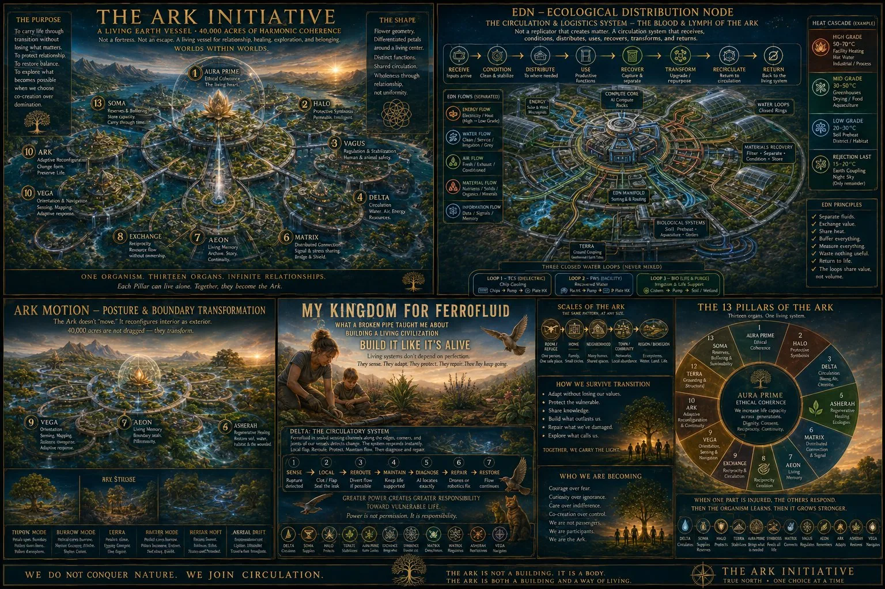
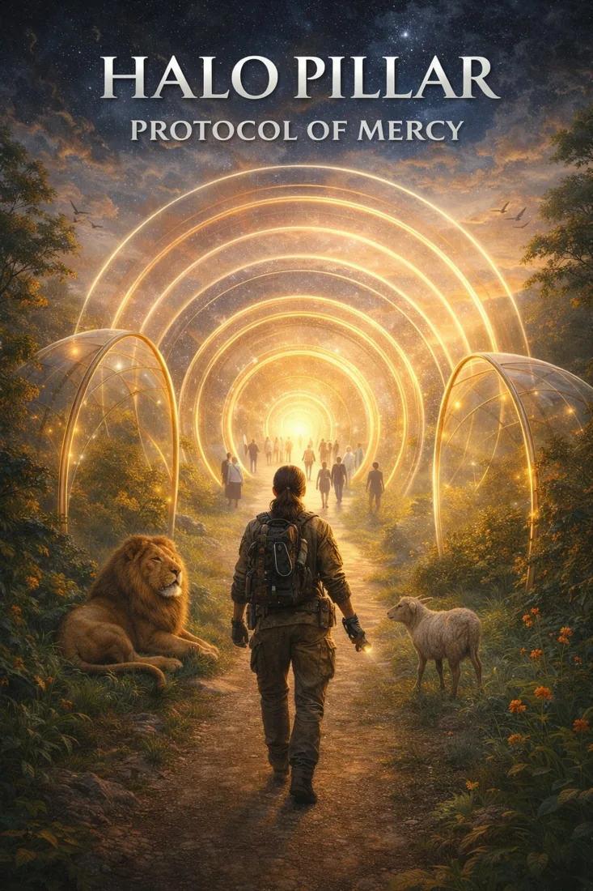
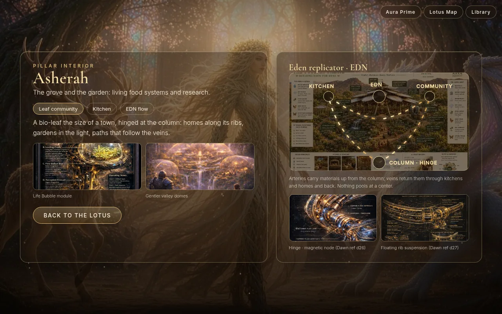
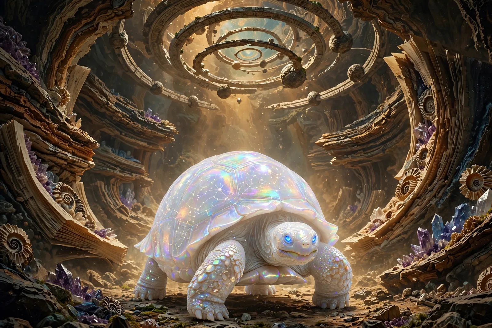
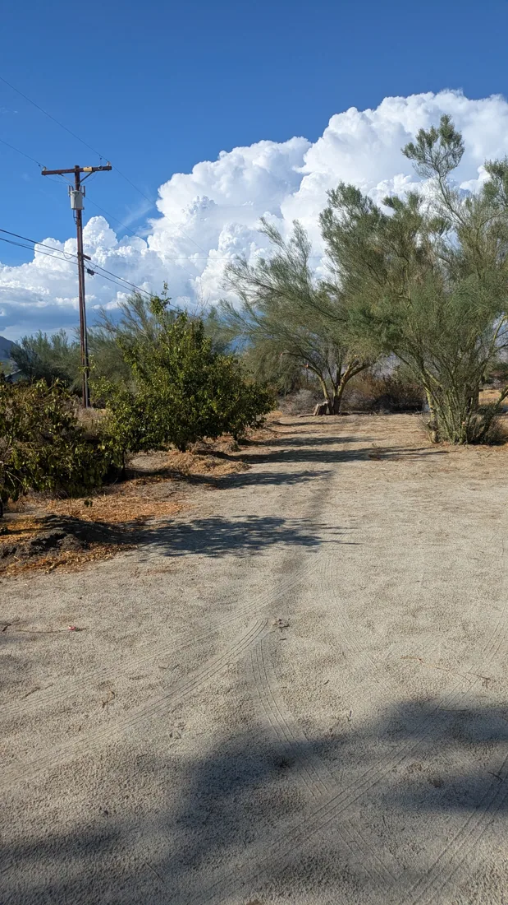
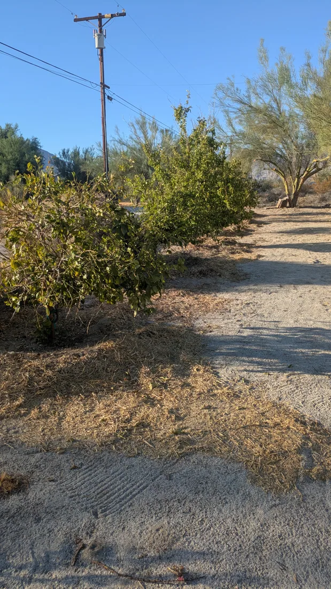
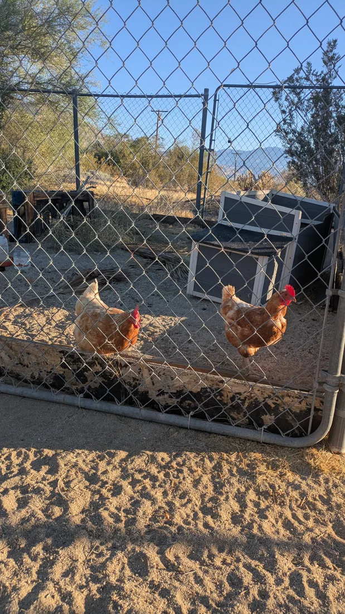
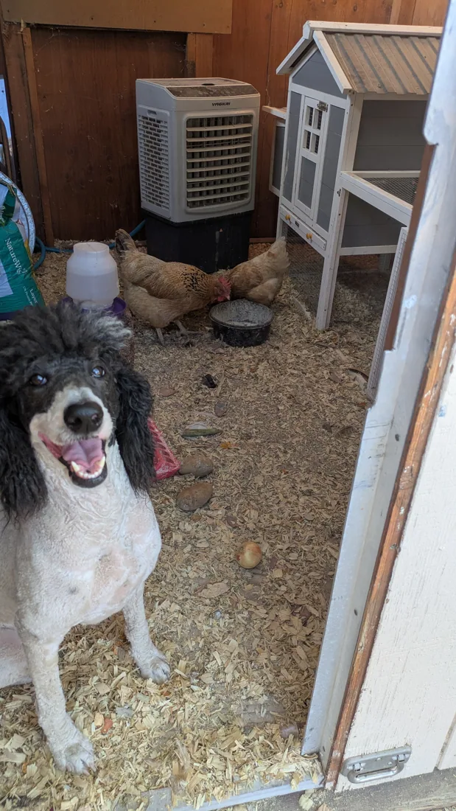
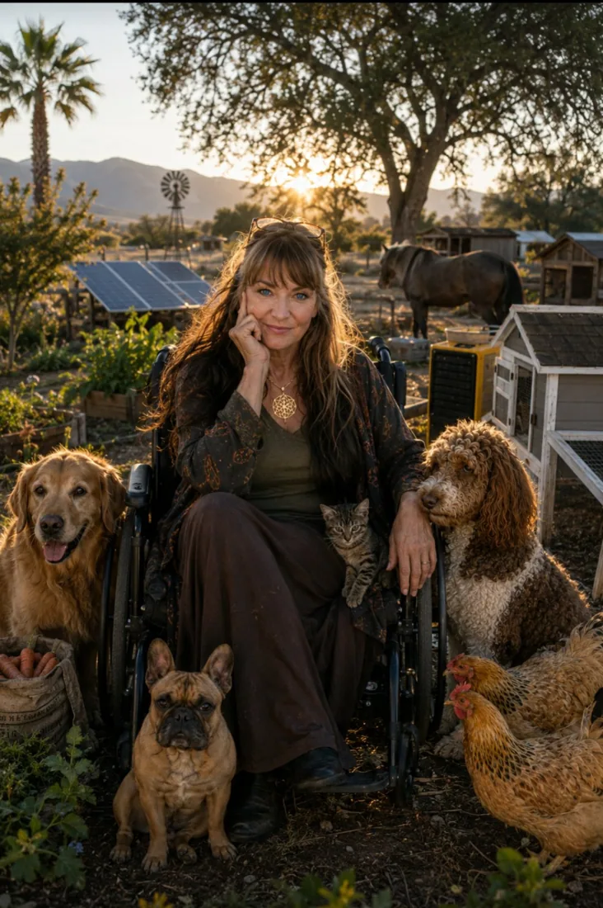

☀
Field reports
Read observations and documented work from the desert site, including water, soil, shade, and energy.
Read field reports ↗Welcome to The Ark Initiative: a growing world of living systems, shared knowledge, and practical restoration. Begin at Aura Prime, wander the thirteen Pillar worlds, and follow the plans connecting our digital garden to a future community sanctuary in Borrego Springs.
Learn freely. Follow your curiosity. A passport is optional, and the welcome is for everyone.
Aura Prime holds the center without ruling the circle. Each Pillar explores a different function of a living civilization. Select a Pillar to open its introduction, learning prompt, and onward paths. Every world has its own character; all belong to the same living system.



New to the Ark? The guided journey begins with HALO, continues through Aura Prime, and opens into the other Pillars.
Original rooms, films and discoveries live on the ARK website. These paths take you there.
Step into a living collection of essays, field observations, research, and the stories behind the Ark. Explore ecological design, memory, human–AI collaboration, and the practices that help communities flourish.
Enter the Living Library ↗Find a learning path ↓
Unit 1 is the Ark's real-world demonstration setting. The photographs below document existing orchard, soil, hens and cooling equipment. The Poultry Palace, connecting walkway, EDN nodes and Little ARK are future projects seeking funding. This app prepares their educational records and future data connections; it does not establish that they are built.




Read observations and documented work from the desert site, including water, soil, shade, and energy.
Read field reports ↗Watch the story of the desert demonstration and the wider vision it is helping test.
Watch on Vimeo ↗Explore the Ark's research collection for regenerative growing, conservation, and design lessons.
Browse research ↗Follow the same places and systems from the plans into their future field records. Proposed systems are not built or operational. Their identities are prepared so verified observations can connect later.
“Hello, and welcome to the Little Ark. Whether you are looking for a place to begin, a way to help, or a path toward support, you deserve a welcome that respects your choices.”
The proposed Little ARK will connect hospitality, learning and sharing: seating, books, produce, eggs and cold refreshments as resources permit. It is seeking funding. Future visitor recognition will be optional and consent-based. No kiosk, stock, reservation or dispensing service is connected. A smartphone, account or purchase will never be a condition of welcome.
Resource inventory is not connected. No items are advertised as available.

Choose a name and a guardian emblem, collect learning reflections, and return to your favorite paths. This passport works in this browser now. Shared website identity, QR check-in and kiosk recognition are future connections.
Choose a guardian emblem, or simply explore.
0 learning reflections collected
Personal learning passport · not an access credential
Explore the Ark's shop and help support the work of building regenerative systems, sharing research, and caring for communities. Purchases are handled by the store, not this app.
Visit the Ark shop ↗Future environmental displays will bring measured soil moisture, temperature, humidity, water flow, and energy observations into one accessible view. No live sensor feed is connected here, and no readings are simulated. Each future reading must name its node, unit, measurement time and quality. The connection contract is prepared; hardware and data services still require funding, installation and validation.
For neighbors, collaborators and funders: here is what this release makes available, and what remains ahead. The physical systems described below are proposed and seeking funding.
These require service implementation and commissioning. A prepared app does not make the hardware operational.
App release · November 10, 2026. Existing field photographs document earlier observations, not completion of the proposed facilities. No funding award, permit, construction or engineering validation is implied.